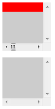
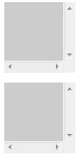
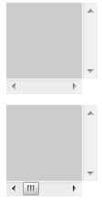
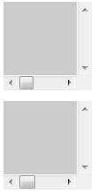
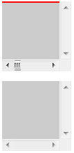
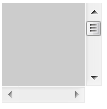
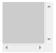

关于 ‘overflow’ 的特性说明请参考 W3C CSS 2.1 规范： http://www.w3.org/TR/CSS21/visufx.html#overflow
当绝对定位元素的偏移位置位于其包含块的可视范围之外时，如果这个元素由于某种原因造成视觉上不可见（如零宽高），它将不会触发父元素的有效 'Scroll' 值。
在 Firefox 和 IE8(S) 内会造成滚动条无效。
| IE8(S) Firefox | 宽度溢出不会使父容器的滚动条设置有效。 |
|---|
这个问题实质上是由于各个浏览器采用了不同的渲染优化策略导致。
分析以下代码：
<!--A组 宽度溢出--> <div style=" position:absolute; width:100px; height:100px; overflow:
scroll; background:#CCC"> <div style="width:1000px;
background:red; position:absolute; "></div> </div> <br /><br /><br
/><br /><br /><br /><br /> <!--B组 定位流方向上溢出--> <div
style="position:absolute; width:100px; height:100px; overflow: scroll; background:#CCC">
<div style="left:200px; background:red; position:absolute;
"></div> </div>
两个定位流中的块元素，其处于绝对定位流中的子元素均溢出容器。第一个子元素从宽度上溢出容器，另一个从定位流方向上溢出父容器。
A 组第一个 DIV 标记内的绝对定位元素虽然设置了宽度，但是没有显式性的设置高度，高度值将使用 'auto' —— 即由内容实际高度决定。现实中这是个空标记，他没有实际内容，最终元素高度为0。
B 组第一个 DIV 标记内的绝对定位元素依然是个空标记，最终高度依然是0。同时他是定位流中非替换元素，没有设置宽度，根据 shrink-to-fit 规则计算其宽度依然为0。
由于宽或高为0，因此他们连个具有共同的特性——在渲染层面其子元素均不可视。
这段代码在不同的浏览器环境中的表现：
| IE6 IE7 IE8(Q) | IE8(S) Firefox | Chrome Safari | Opera | |
|---|---|---|---|---|
|
A
B |
 |  |  |  |
在这四组对照中，可以发现 IE8(S) Firefox Chrome Safari 浏览器在 A 组第一个子绝对定位元素宽度超出父容器后，没有使父容器产生实质的滚动条状态。
即是说，当不可视的绝对定位元素从宽度方向上溢出其处于绝对定位流内的容器之后，IE8(S) Firefox Chrome Safari 的渲染引擎将会把该元素移出渲染流不做渲染，以加快渲染速度。
而 Opera 浏览器的渲染引擎则没有做这些渲染效率优化工作，导致父容器可以正确计算子元素溢出容器后的宽度，从而产生实质的滚动条。
此外，在 B 组中 Chrome Safari Opera 浏览器第二个不可视的子绝对定位元素在定位流中溢出父容器后，产生了实质滚动条。这说明他们的渲染引擎没有对此情况作优化处理，依然会进行实质性的渲染工作即使该元素已经不可视。
对照全部在 B 组中的 IE 系列浏览器和 Firfox 浏览器，可以看出这种情况下，他们均会将实际上已经不可视的元素移出渲染流不做渲染，以加快渲染速度。
最后再看 A 组中 IE6 IE7 IE8(Q) 的特殊表现，这里由于 IE6 IE7 IE8(Q) 浏览器在默认情况下会给空 DIV 元素设置一个默认高度最小值和最小默认行高值以及最小默认字号值。
现将测试代码稍作修改，以便在 IE6 IE7 IE8(Q) 中得到一个不可视的宽度溢出元素。
<div style=" position:absolute; width:100px; height:100px; overflow: scroll;
background:#CCC"> <div style="width:1000px; background:red; height:0;
line-height:0; font-size:0;overflow:hidden;"> </div>
</div>
此时运行结果如下：
| IE6(Q) IE7(Q) IE8(Q) | IE6(S) IE7(S) IE8(S) | |
|---|---|---|
|
A
B |
 |
根据上表可以看出现在情况已经很明确了：
所有 IE 浏览器在标准模式下对不可视元素宽度溢出情况均做了渲染优化，不将其加入渲染流中，因此父元素无法产生设置的滚动条。
所有 IE 浏览器在混杂模式下无论如何设置都不可将空 DIV 通过设置宽高等手段变为实际渲染时不可视，因此宽度可以在渲染时被计算，使父元素产生滚动条。
高度方向上溢出容器情况
现在有必要在前面分析的基础上加入对高度方向上溢出容器的测试，分析以下代码：
<div style=" position:absolute; width:100px; height:100px; overflow: scroll;
background:#CCC"> <div style="height:1000px; background:red;
width: 0px;"></div> </div>
此时运行结果如下：
| IE6 IE7 IE8(Q) Safari Chrome Firefox Opera | IE8(S) |
|---|---|
|  |  |
由表可见，当不可视元素的宽度溢出容器后，除 IE8(S) 外，其他浏览器都没有对此情况做渲染优化，因此处于定位流中的父元素产生了实质的垂直滚动条。
IE8(S) 则是在宽度高度上都对不可视元素溢出容器在渲染流层面做了优化，溢出元素被移出渲染流，不影响父容器布局计算。
补充说明—— 对于不可视的绝对定位元素，WebKit 内核与 Gecko 内核生成滚动机制的差异：
在 Gecko 内核中，若一个元素及其子元素在实际显示中不可视，也就是说其宽度和高度至少有一个为0，则在视觉上这个元素也不占有任何空间。其内核渲染计算中，其包含块在计算内核对象 nsScrollPortView 的 ContainerSize 的值时，如果不可视元素的绝对定位元素在其包含块尺寸计算时被忽略，所以此时浏览器不会为包含块生成滚动机制。.
在 WebKit 内核中，以绝对定位元素通过 top 特性迫使其在垂直方向位于其包含块的可视范围之外的情况为例，渲染引擎会通过调用 lowestPosition 方法计算出盒子的底边位置，在其中参考了绝对定位元素的垂直位置的相对偏移，但并没有对绝对定位元素是实际可视作判断，所以此时浏览器会为该元素启动滚动机制。
避免在定位流内出现不可视元素且溢出父容器。
| 操作系统版本: | Windows 7 Ultimate build 7600 |
|---|---|
| 浏览器版本: |
IE6
IE7 IE8 Firefox 3.6 Chrome 4.0.302.3 dev Safari 4.0.4 Opera 10.53 |
| 测试页面: | position_subElment_overflow_scroll.html |
| 本文更新时间: | 2010-08-06 |
absolute positioned 绝对定位 滚动条 包含块 scrollbar containing block width height